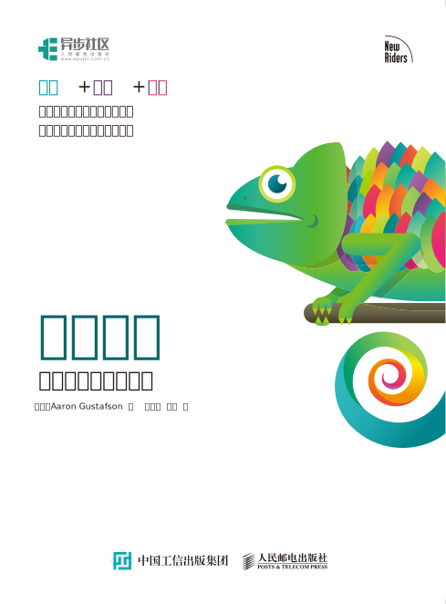
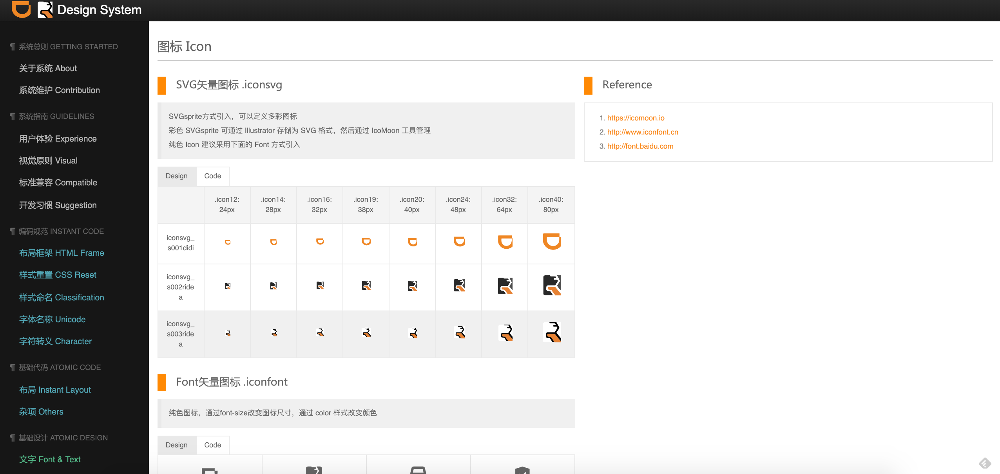
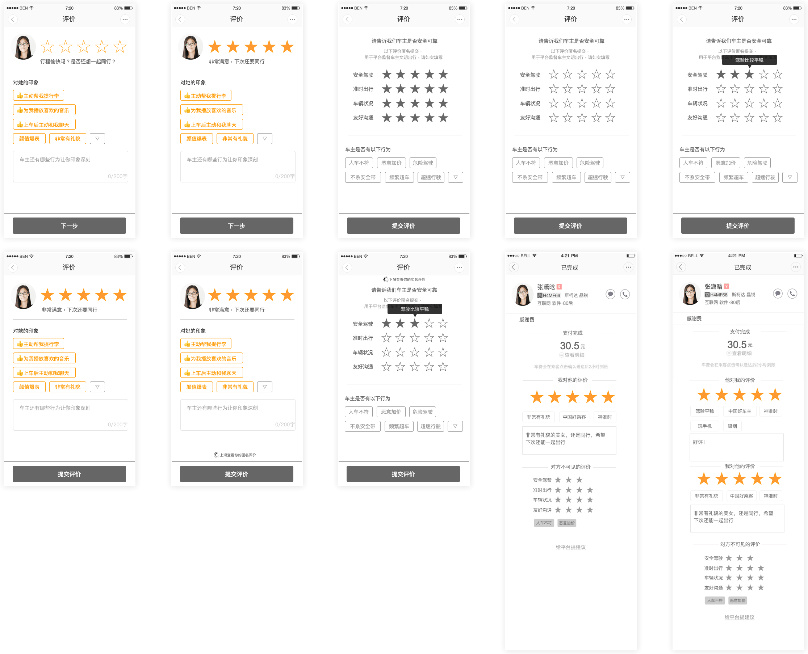
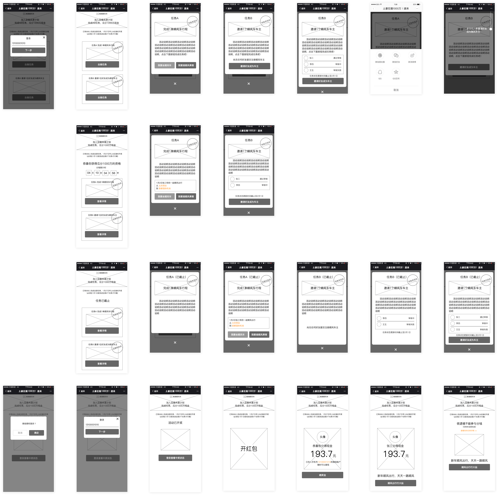
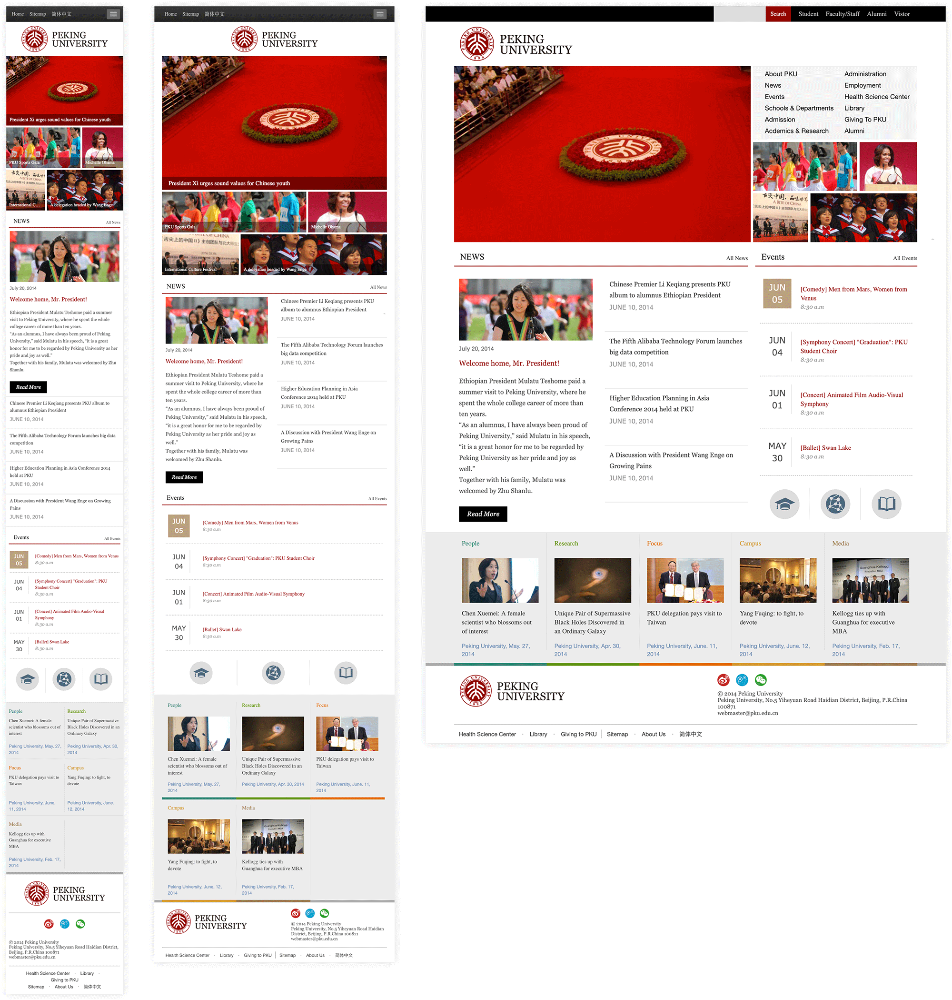
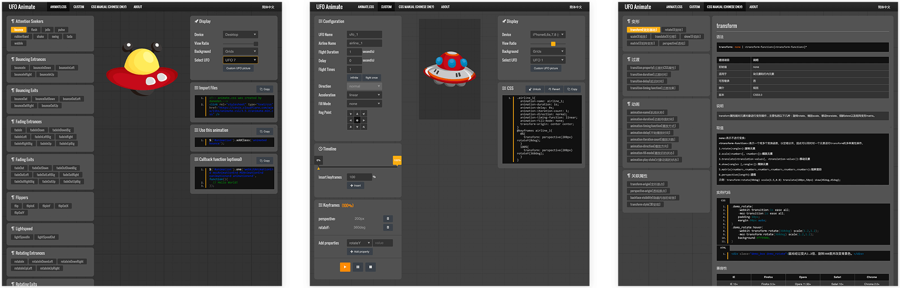

Portfolio
Dongfang is a UX designer with a cross-knowledge background. As an experienced interaction designer or UI developer who is passionate about Web, he used to work for Tencent, Alibaba and DiDi Chuxing group. In addition, he holds a master degree in the major of Chinese Studies (Language Education).
Overview
-
Knowledge Development Graph
This picture depicts my knowledge structure about design, past experience is listed in it by relevance.
Translation Work
-

渐进增强：跨平台用户体验设计
FROM: "Adaptive Web Design" by Aaron Gustafson2017, ISBN: 9787115448484
SAMPLE PARAGRAPH:
"He found that OS-wise, Windows use had dropped from 93.5 percent to 72.4 percent, no doubt because of the rise of Apple’s OS X and iOS as well as Google’s Android operating system. As you’d likely expect, he found that mobile usage (including tablets) had grown year over year at a rate of 200 to 400 percent from a paltry 0.1 percent in 2008 to 6.2 percent in 2012. Couple the decline of Windows with the rise of mobile and the launch of Chrome (which came out in 2008) and it’s no wonder Jason also saw a sharp decline in Internet Explorer’s numbers: Internet Explorer dropped from a dominant position, bringing 75.5 percent of their visits, to a mere 37 percent." (p. 93; ch. 4).
“从美国居民使用的操作系统来看，Windows 操作系统的占有率从93.5% 跌落到了72.4%，毋庸置疑，这些份额主要是被Apple 公司的OSX 和iOS 操作系统，以及Google 的Android 操作系统蚕食掉的。不出意料，他在文章中表示，移动设备（包括平板电脑）的使用率，逐年保持着200% 到400% 的高速增长，2008年移动设备的使用率还不足0.1%，而在2012 年，这个数字已经上涨为6.2%。考虑到Windows 的式微，移动设备的崛起，以及2008 年诞生的Chrome 浏览器的迅速普及，Jason 毫无意外地看到了IE 浏览器那摧枯拉朽般的份额下跌，从占市场支配地位的75.5%，腰斩至是年的37%。” (第79页; 第4章).
-

JavaScript数据可视化编程
FROM: "Data Visualization with JavaScript" by Stephen A. Thomas2017, ISBN: 9787115444356
SAMPLE PARAGRAPH:
"For this example, we’ll visualize one of the most important findings in modern physics—Hubble’s law. According to that law, the universe is expanding, and as a result, the speed at which we perceive distant galaxies to be moving varies according to their distance from us. More precisely, Hubble’s law proposes that the variation, or shift, in this speed is a linear function of distance. To visualize the law, we can chart the speed variation (known as red shift velocity) versus distance for several galaxies. If Hubble is right, the chart should look like a line. For our data, we’ll use galaxies and clusters from Hubble’s original 1929 paper but updated with current values for distance and red shift velocities." (p. 224; ch. 7).
“在本例中，我们将把现代物理学最重要的发现之一——哈勃定律——的效果用可视化实现出来。根据此定律，宇宙是无限延展的，由此，我们所能感知到的遥远的星系的移动速度，随着它距离我们的距离的变化而变化。更准确地说，哈勃定律提出，对于这一速度的任何的变化和转移，都与距离呈线性函数关系。为了更直观地观察这一定律，我们可以将速度的变化（也被称作是“红移光谱速度”）和几个星体之间的距离的关系制成图表。如果哈勃定律是正确的，那么这个图表看上去应该就是一条直线。而对于我们的数据来说，我们要使用的，是来自于哈勃于1929年发表的初版的论文，但又根据各星体距离和红移光谱速度而随时更新的即时值。” (第232页; 第7章).
Keynotes
-
From Voice & Tone to Content Strategy - 情感化內容策略
2016, DiDi Chuxing
I introduced two types of content guideline to DiDi Hitch's design team members: Uber's "Copy Style" and MailChimp's "Voice & Tone". At the same time, the essential principles of Content Strategy were also mentioned in this presentation. -
The Overview of Web Design - Web 设计基础
2016, DiDi Chuxing
Considering most designers in DiDi's design team were more familiar with the mobile platform than desktop, This presentation focus on mobile: how to present a graceful web page on mobile devices? how to take the advantage of adaptivity for web pages? what is the design trend in recent years? In the end, I reviewed some concepts that frequently be discussed by UI developers. -
Future Friendly Web Design - 面向未来的友好设计
2015, Tencent
This keynote is for junior designers of Tencent online media group. Here I introduced some fantastic shares by great designers around the world, sorted the core concepts and principles of Future Friendly Web Design, listed some designers, books, and resources about FFLY. -
Responsive Web Design: Rebuild as Design - 响应式设计
2013, Tencent
Responsive Web Design combines design style and tech solution together. In this live speak which was for 200 audiences of 3 cities, I addressed the best practices of responsive web design: how to deal with the increasing development of mobile devices and resolutions? With the rules, methods and new design workflow evolution, performance would be considered as a significant part of our design process.
Design System
-
DiDi Hitch's Design System - 滴滴顺风车Web设计开发指南
2016, DiDi Chuxing

Web Motion Design
-
Hitch Big Data Promotion - 顺风车大数据品宣 H5
2016, DiDi Chuxing
-
National Day Promotion - 十一出走计划 H5
2016, DiDi Chuxing

Interaction Design
-
The Survey Page After A Hitch Journey - 顺风车行程结束评价页
2016, DiDi Chuxing

-
Do Task, Share 10 Million - 完成任务赢1000万现金
2016, DiDi Chuxing

Make Websites
-
The International Official Website - 北京大学英文官网
2015, for Peking University

Build Tools
-
UFO Animate, An CSS Animation Tool
2016, Personal project
